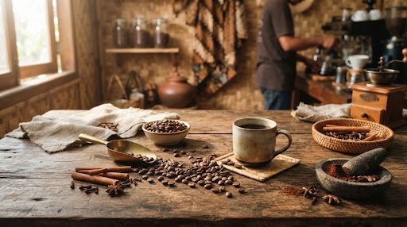

Detail Kain
Membaca Kain Lewat Detailnya
Foto utuh memperlihatkan motif. Foto dekat menjelaskan tekstur dan tepian.

Kisah autentik para perajin dan pemilik usaha mikro dalam merawat kualitas, bahan baku alami, dan transparansi informasi kepada pelanggan.
Detail Kain
Foto utuh memperlihatkan motif. Foto dekat menjelaskan tekstur dan tepian.

Kemasan Kuliner
Susun nama, berat, varian, dan ketersediaan agar mudah ditemukan.

Keramik
Perlihatkan bentuk, permukaan, dan ukuran dengan sudut yang saling melengkapi.

Produk Anyaman
Tunjukkan tekstur sekaligus ruang pakai produk kriya.